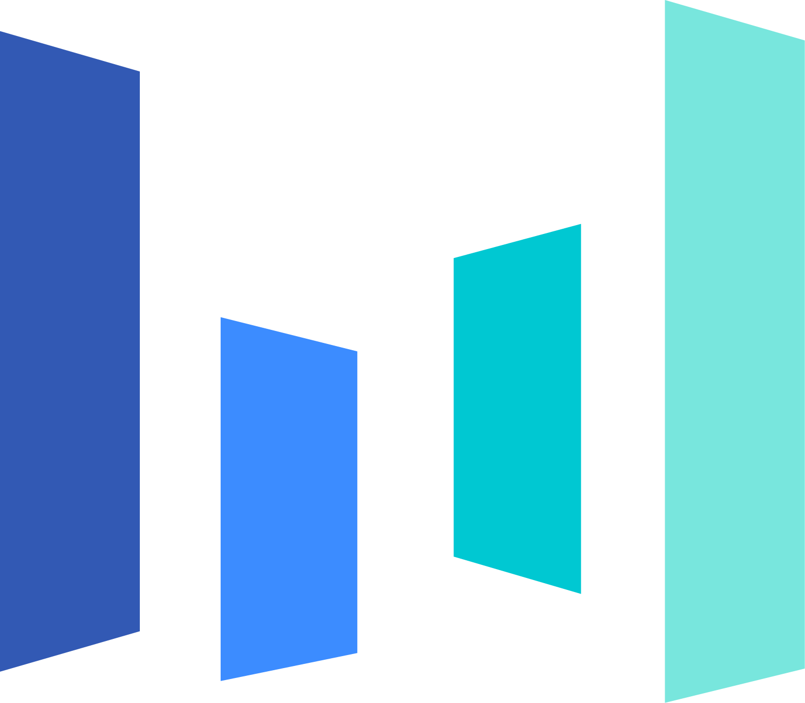

01
vLLM Contributor —
A high-throughput, memory-efficient inference and serving engine for LLMs.
- Batched weight prefetching that yields a >50% per-step latency decrease and ~4% lower TTFT. PR #41474
Hi, I’m Long Wu. I’m a Software Engineer at Microsoft. Currently, I’m also a Research Intern at UC Merced, advised by Prof. Dong Li. My research interests are Computer Systems, HPC, Distributed Computing & Machine Learning.
I prefer ideas that are simple, solid and making true impact. I love building things that can solve real problems.
Companies where I’ve worked or interned.


Selected projects I’ve authored or contributed to. More on GitHubxiaobao520123.
A selection of recent work.
Awards: The First Prize of National Contest at the 9th China Software Cup (2021).